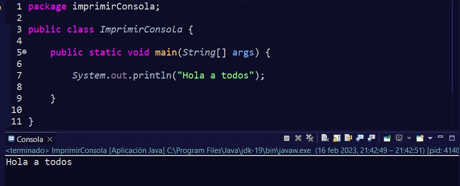
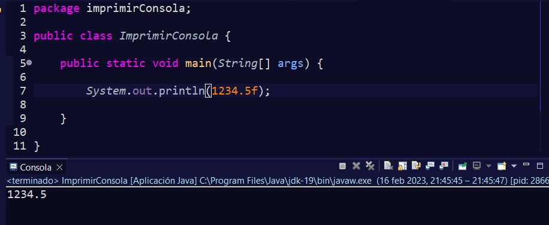
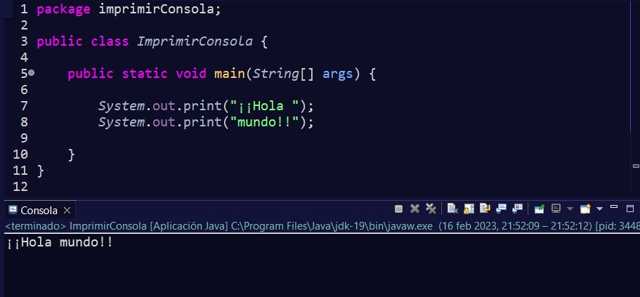
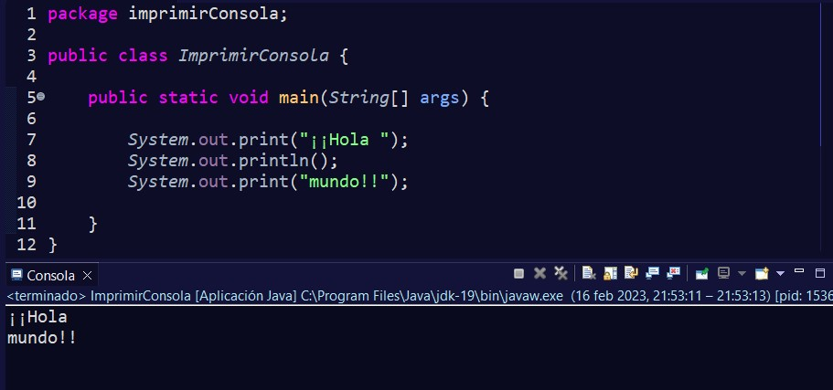
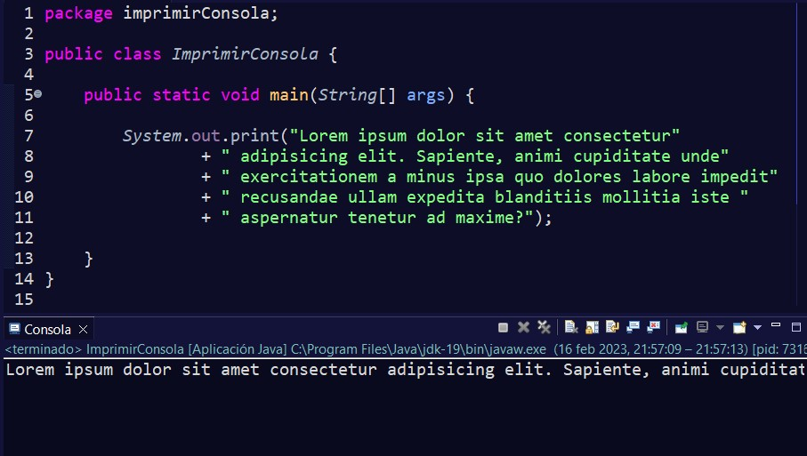
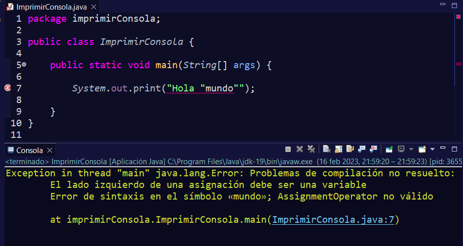
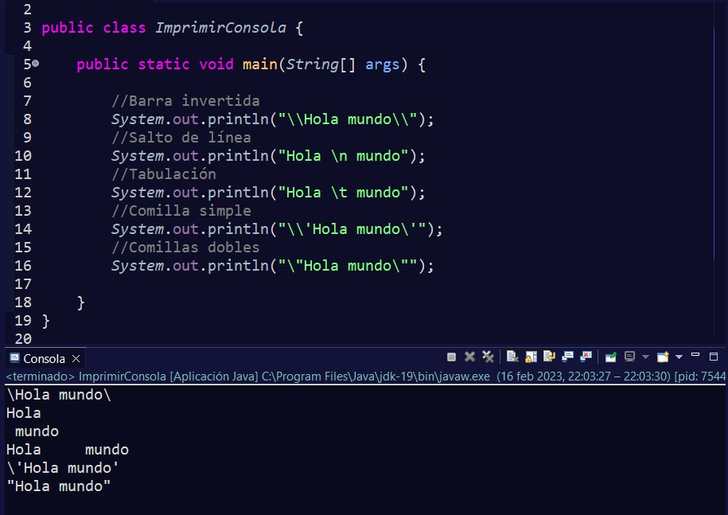
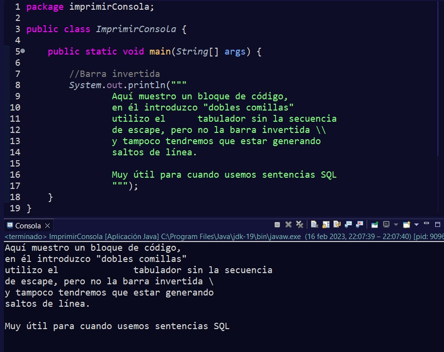
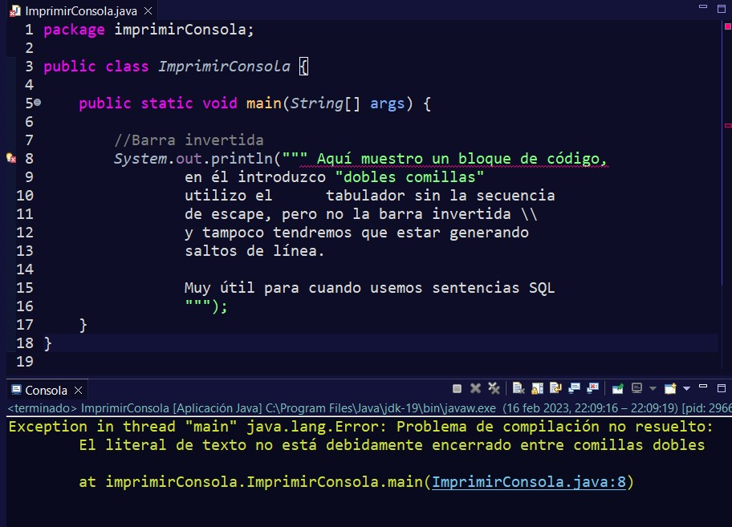
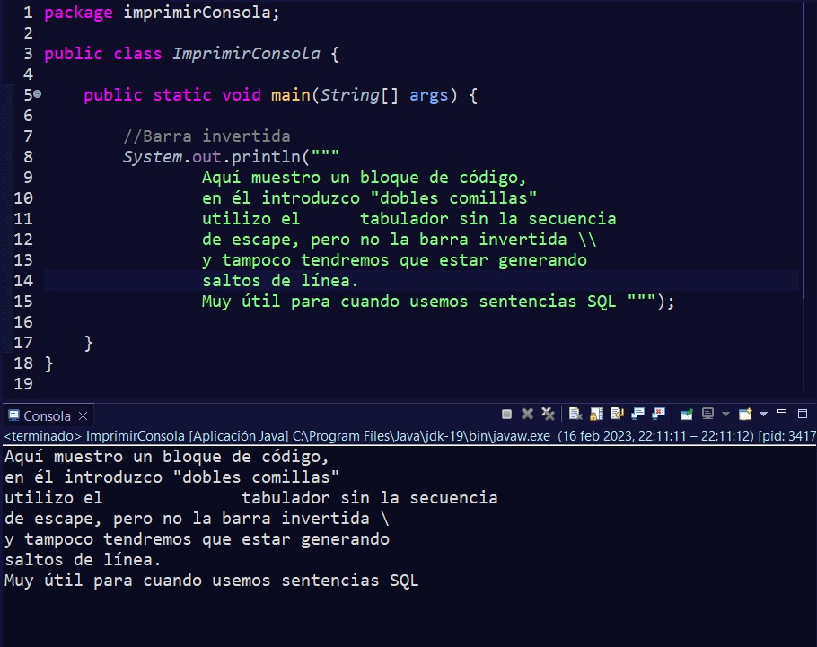

Cuando creamos una aplicación por consola, podemos utilizar la clase System para mostrar texto por consola y que pueda leerlo el usuario que utilice nuestro programa.
Para ello, se utiliza el método System.out.println(); y dentro de los paréntesis se escribe el contenido que queremos imprimir.
Por ejemplo:
Como se puede ver, cuando queramos escribir una frase, ésta se encierra dentro de comillas dobles. Pero no sólo podremos usar texto, sino que tenemos más combinaciones posibles, como por ejemplo escribir números.
Existen más combinaciones posibles, pero de momento es suficiente con saber que, para imprimir texto y, que sea mostrado por consola, se utiliza este método.
También tenemos otra variante, que es System.out.print(). Mientras println() muestra el texto en consola y deja el cursor en la siguiente línea, print() deja el cursor justo donde termina el texto.
Si solamente queremos genera un espacio, podremos usar System.out.println() sin introducir parámetros.
Cuando tenemos una frase muy larga, que no se puede mostrar entera en el editor, podremos partir el texto e ir uniéndolo mediante el operador de concatenación +.
Por último, tenemos un problema si queremos introducir comillas dobles dentro de una cadena de texto, ya que si lo hacemos, el compilador interpreta que el fin de la cadena llega cuando se encuentra de nuevo con comillas dobles y el resto de código lo interpretará como código distinto a esa cadena.
Para solucionar este problema tenemos la secuencia de escape. Ésta consta de una barra invertida \, seguida en este caso de comillas dobles ", es decir, \".
Pero no solamente tenemos la secuencia de escape para introducir comillas dobles, sino que existen más secuencias de escape, ya que hay más símbolos que se utilizan en el código para realizar ciertas funciones y por ello no se pueden representar directamente. Las que más podríamos usar con nuestros conocimientos son:

A partir de la versión 13 de Java, tenemos disponible la triple comilla doble. Con ella nos evitaremos el tener que estar generando constantemente secuencias de escape para nuestro código, además de tener que introducir comillas dobles en el interior.
Pero cuidado, el texto debe de comenzar en la siguiente línea después de las triples comillas dobles,
Aunque sí que podremos finalizar en la misma línea que las comillas.
